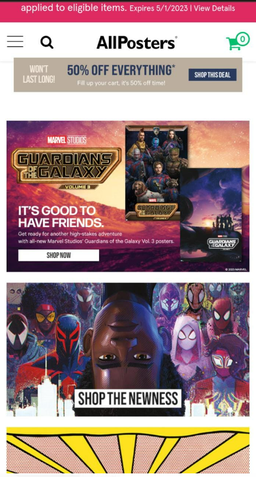
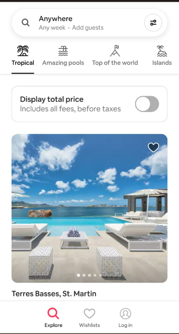

Visual Hierarchy
ALLPosters
allposters.com I liked how the homepage fit on a mobile screen. Everything was a bit different from the desktop view but easy enough to understand. The mobile view had everything shrink and move a bit to make space for other items to be easily made out. I can clearly make out what they are trying to show me.
Hick's Law
Amazon
amazom.com

With Hick’s law we now have more options and choices when browsing a website. We can select from different options by category to be more effective and user friendly. As with Amazon we can see that the mobile site has those options as well.
Fitt's Law
AirBnb
airbnb.com AirBnb is a perfect example of using Fitt’s Law where it is very responsive and interactive. Website buttons are placed strategically for users to have a good experience. The mobile site is setup for someone to use it without too much hassle with their thumb they can access nearly everything on the site.